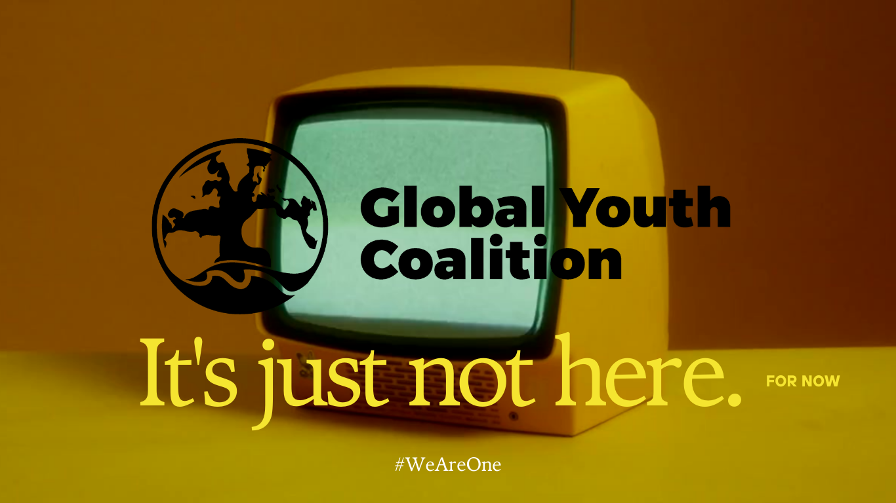

Oops! Page Not Found
Sorry changemaker, the page you are looking for might be under construction or temporarily unavailable. Tell Agustin and the team to finish their job XD
Go Back to Home
Sorry changemaker, the page you are looking for might be under construction or temporarily unavailable. Tell Agustin and the team to finish their job XD
Go Back to Home